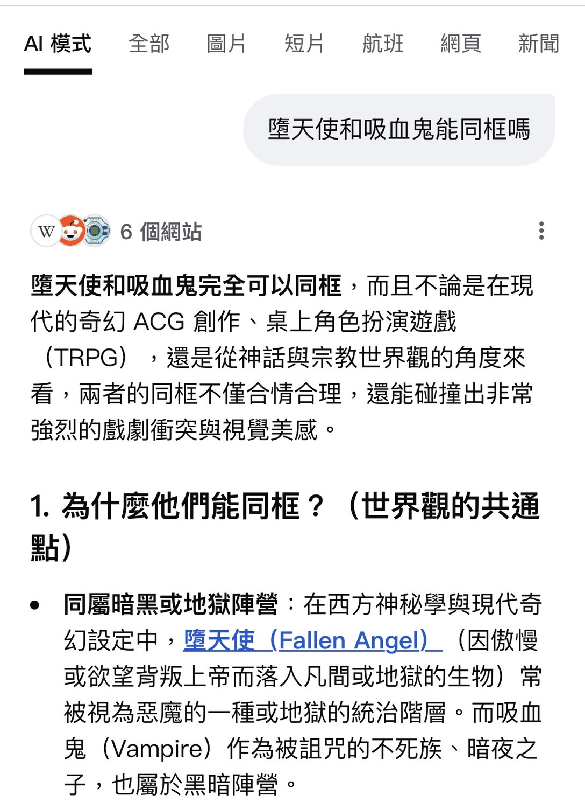
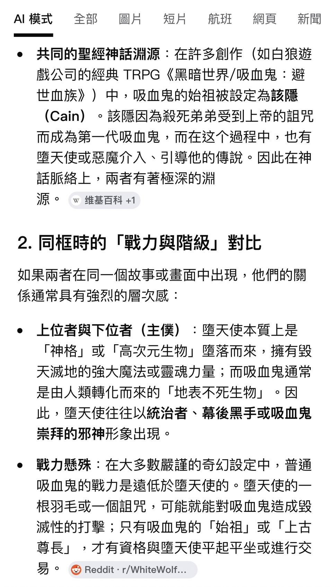
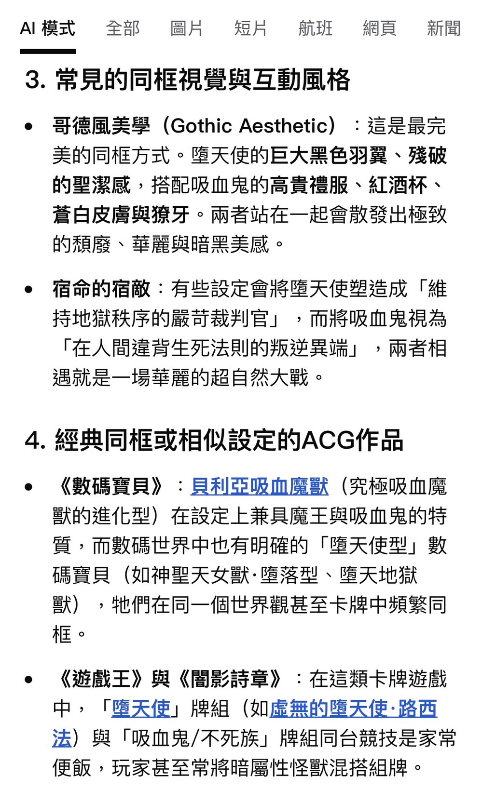
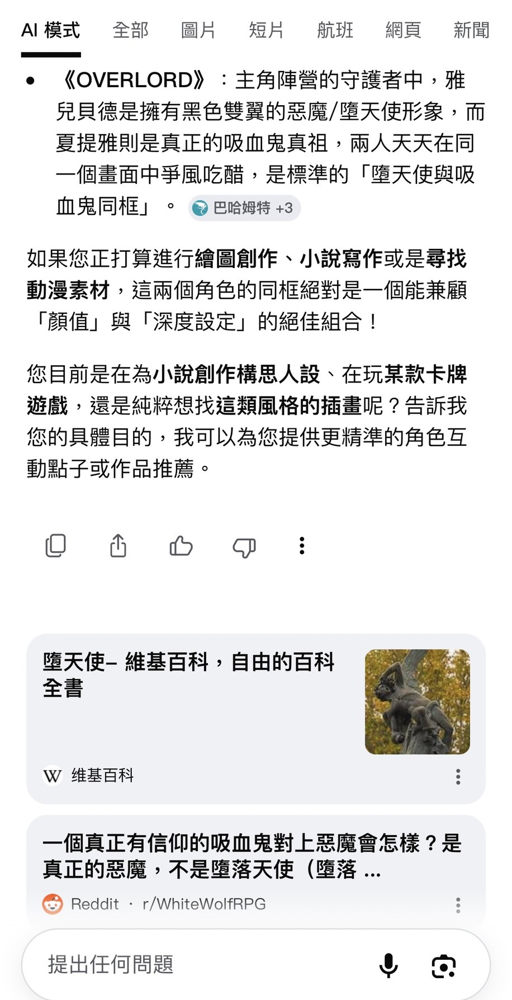

點擊上方的語言選單以切換語言
在許多奇幻與恐怖作品中，我們經常看到吸血鬼與教會對立，
卻很少看到天使真正登場。這種現象乍看之下，似乎只是因為
兩者來自不同的神話體系，但如果深入分析，就會發現問題遠不止於此。
有些人會提出一個看似合理的反駁：既然某些作品將「該隱」設定為吸血鬼的始祖，
而天使本來就是聖經中的重要角色，那麼吸血鬼與天使為何不能同時出現？
這個問題本身沒有錯，但它的前提其實建立在一個現代創作的誤解之上。
在宗教經典中，該隱只是人類歷史上第一個犯下殺人罪的人，
他被上帝懲罰並流放，卻從未被描述為吸血或不死的存在。
將該隱塑造成吸血鬼始祖的設定，實際上是二十世紀的創作產物，
後來才被大量小說與遊戲沿用。按照聖經時間觀，他大約生活在距今六千年前。
相比之下，現代人更熟悉的吸血鬼形象——德古拉——則來自十九世紀小說，
並以十五世紀的歷史人物為原型。也就是說，在許多設定中，
德古拉原本是一名人類，後來才因詛咒轉變為吸血鬼。
若以時間推算，該隱與德古拉之間的「年齡差」可達五千年以上。
因此，儘管該隱在時間上更接近「始祖」的位置，
他在大眾文化中的影響力卻遠遠不及德古拉。
這種差異的原因在於，德古拉誕生於小說與影視等大眾媒體之中，
形象鮮明、易於傳播；而該隱作為吸血鬼始祖的設定，
則屬於較晚期的世界觀補完，影響範圍相對有限。
如果追溯歷史，吸血鬼的原型其實來自東歐的民間傳說，
尤其是在巴爾幹與斯拉夫地區。這些傳說中的「吸血鬼」，
往往只是復活的屍體，帶有腐敗與不潔的特徵。
然而，隨著基督教在歐洲的擴張，這些民間信仰逐漸被重新詮釋，
成為違反神聖秩序的存在。十字架、聖水與聖職者，
也因此成為對抗吸血鬼的重要元素。
從設定上來說，讓天使登場並非不可能，
但在多數作品中，創作者會刻意避免這樣的安排。
天使象徵神的權威與秩序，而吸血鬼則代表墮落與詛咒。
當兩者直接對立時，故事往往會失去張力，
因為力量結構會迅速失衡。




現代吸血鬼作品中常見的陰鬱氛圍，實際上來自哥德文化，
而非宗教經典本身。這種風格源於中世紀建築、
瘟疫時代的死亡意識，以及十九世紀文學的再創作。
宗教元素在這裡更多是一種象徵與視覺語言，
而不是神學敘事的直接延伸。
儘管不同文化體系之間往往保持距離，
但在香港影視作品中，東方殭屍與西方吸血鬼卻曾成功同框。
例如電影《一眉道人》與《驅魔道長》，以及電視劇《殭屍道長》，
都讓道教殭屍與西方吸血鬼在同一世界中並存甚至對抗。
這類作品並不強求世界觀的嚴格統一，
而是採取一種更靈活的方式：讓不同體系各自運作。
符咒可以對抗殭屍，十字架可以壓制吸血鬼，
兩種規則互不干涉，卻同時成立。
從吸血鬼與天使是否能同框的問題出發，
我們最終看到的，其實不是神話之間的衝突，
而是不同敘事策略之間的選擇。
吸血鬼、天使與殭屍當然可以存在於同一個故事中，
但關鍵從來不在於「能不能」，而在於創作者是否願意
在世界觀一致性與想像自由之間做出取捨。